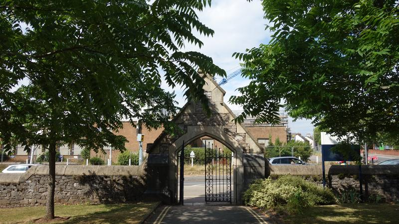
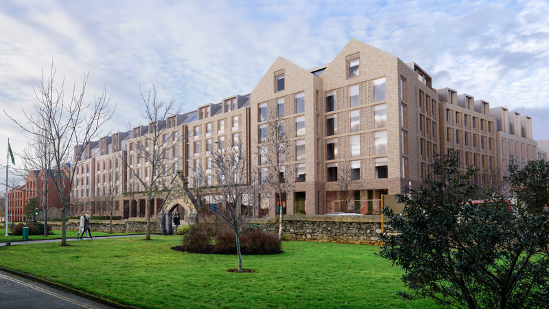
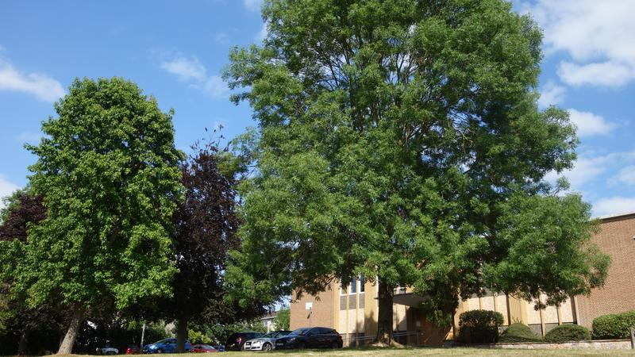
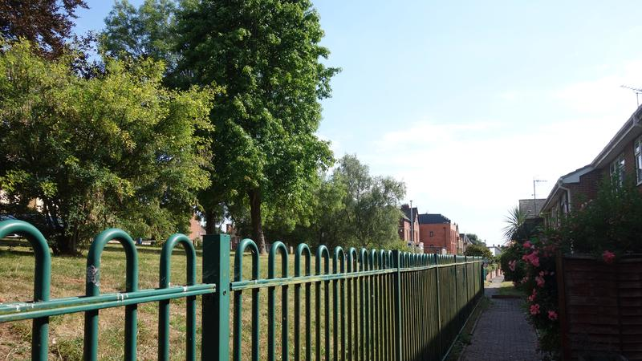

When Exeter City Council’s planning committee met last month to decide whether to grant permission to build a pair of student/co-living blocks on the site of the former police station and magistrates’ court on Heavitree Road, the development design had already been through seven iterations.
Proposals for the site that were originally put forward in July 2020 had apparently been so comprehensively revised after passing through three independent design review panels and as many rounds of public consultation that council development director Ian Collinson felt able to enthusiastically recommend what he described as a “high quality development”.
He said its design had been “significantly amended” in response to the objections that had been raised, that the blocks would deliver “substantial economic, social and environmental benefits” and that their extreme residential densities would align with the council’s Liveable Exeter property development scheme.
Illustrative aerial view from south east. Image: TP Bennett.
The committee members saw things differently. They voted on a range of reasons to refuse the application from offshore-registered PBSA Heavitree Road S.A.R.L. and the office of the Devon and Cornwall Police and Crime Commissioner.
These included the adverse impact of the proposed development’s scale, mass and siting, the insufficient residential amenity space it provided, the harm it would do to the surrounding area and its residents and the loss of 26 trees on the site. They then sent Mr Collinson away to support their objections with relevant planning policies.
He duly returned to the following committee meeting a fortnight ago with “full technical reasons for refusal”, carefully crafted by planning officers to present the strongest possible case for the council’s decision in the face of an expected appeal challenge.
However Mr Collinson also said that the applicants, having already asked to defer the decision from the committee’s July to September meeting, now wanted to defer it again, this time from October to December, which will be the sixth time council planning committee members have convened to consider their proposals.
He recommended the deferral to allow an eighth design revision followed by a fourth review panel assessment and yet another round of public consultation, and “to ensure that any proposals considered at appeal are the most appropriate for the area”. In the meeting he said: “All the applicant has asked for is a bit more time”.
Illustrative aerial view from south west. Image: TP Bennett.
Neil Howells, speaking at the meeting on the applicants’ behalf, claimed that all the reasons for refusal could be “addressed within the scope of the current proposals”.
However many of the committee’s objections had been raised by the first design review panel nearly two years ago, and the same issues were “still considered relevant” when committee members met in September last year to consider what were by then being described as “significantly revised proposals”.
Rather than further amending the design in discussion with officers and councillors and seeking feedback on its proposals directly from the public before formally applying for planning permission, the developers then went ahead and submitted this set of plans unchanged.
As a result, as multiple design revisions have followed, council officers have been compelled to hold three rounds of public consultation and prepare reports and presentations for three council planning committee meetings. Now another of each must take place too.
Meanwhile none of the 115 comments made by members of the public who have managed to participate in the planning process despite the impediments created by the applicants’ approach are in favour.
The developers have so far submitted 130 application documents, 51 of which have been superseded at one stage or another, and generated dozens of correspondence threads, many of which have to be revisited each time the proposals are further revised.
Despite all this the plans for the site remain essentially unaltered since their submission.
Their latest iteration proposes a seven storey student accommodation block opposite the university’s St Luke’s campus which would provide 677 bedrooms in a mix of cluster flats and self-contained studios, none of which meet national minimum space standards, arranged around two small courtyards.
Beside would stand an eight storey “co-living” block providing 358 even smaller self-contained studios built around a single courtyard. Most would squeeze a bathroom, kitchen, sitting area, bedspace and, apparently, workspace into less than 19 square metres.
Council officers said they were “content that the scale and massing of the proposals positively respond to the context of the site in terms of respecting the character and appearance of the area”.
Labour councillor Matt Vizard disagreed. He described the proposed buildings as “a blot on the landscape” with a “blandly modern, suffocating frontage [that] will dominate and jar badly with the historic and much admired architecture and aesthetics of the St Luke’s campus opposite”.
Labour’s Emma Morse said the design was not taking the surrounding area into account while Labour’s Bob Foale called it a “carbuncle” and Labour’s Marina Asvachin said it was “hideous”.
Undaunted, Ian Collinson presented the design as “strong and bold architecture, appropriate for an ambitious and confident city like Exeter” which would “repair some of the urban fabric along a key gateway to the city centre”.
He added adding that bringing the site frontage forward to “address Heavitree Road” would improve on the current development footprint, which he said makes “no contribution to the street scene”.
Liberal Democrat Michael Mitchell also disagreed. He said the design revisions hadn’t improved the visual impact at all and that the proximity of the proposed frontage to the pavement would destroy the good example of adjacent buildings which are set back from the road.
Illustrative ground floor plan. Image: TP Bennett.
The student accommodation block would provide just 1.8 square metres of internal communal amenity space per bedroom, while all the internal communal amenity space in the co-living building would add up to just 2.5 square metres per studio.
Council planning officers nevertheless said they were “of the view that the quality of amenity that will be provided within the proposed co-living block is acceptable”.
External amenity space would not make up for the cramped conditions in this block: its courtyard would provide less than 1 square metre of space per studio. The situation would be only slightly better next door, where each bedroom would come with 1.14 square metres of courtyard space.
The council’s own public and green spaces team criticised the design for providing “limited private garden space for residents” and “little in the way of open space or play provision on site”, forcing all its inhabitants to use nearby public green spaces.
Council planning officers nevertheless accepted the development’s “reliance on existing public open spaces nearby to provide outdoor amenity and recreational space”.
All three councillors for Newtown & St Leonard’s, the ward in which the development site is located, were critical of this aspect of the proposals. Independent Jemima Moore said such low levels of outdoor amenity space would be detrimental to the health of occupants while Labour’s Matt Vizard and Richard Branston both highlighted the insufficiency of the courtyards to meet the needs of more than a thousand residents.
Were each of the 1035 bedrooms currently proposed at the 1.25 hectare Heavitree Road site only to have a single occupant, the development would have a density of 828 inhabitants per hectare, nearly 30 times Exeter’s average of a little less than 28 inhabitants per hectare. And there appears to be nothing to prevent couples sharing the studios.
This would be considerably higher than the extreme densities proposed for the Liveable Exeter redevelopment at Haven Banks and vastly greater than the density recommended for the area in the LDA Design density study which forms part of the new Exeter local plan evidence base.
Illustrative typical floor plan. Image: TP Bennett.
Affordability received little attention from planning committee members, notwithstanding prospective rent levels at the co-living block nearing completion next door, which would mean many local key workers living below minimum income threshold even in “affordable” studios.
The prospective Heavitree Road student block operator, which manages more than fifty similar developments across the country, offers cluster flat rooms in Bristol that start at £776pcm and studios in Bath from £1,187pcm. It says that the Heavitree Road co-living block would provide “an alternative affordable housing solution for young professionals and key workers”.
Ian Collinson concurred, saying that the development would provide “much-needed” accommodation for students and young people and that “priority will be given to essential local workers” for the 20% of co-living units that would be offered at a 20% discount on market rents.
How such workers would be prioritised is unexplained, as at the adjacent development. Will these rooms be held empty until “essential local workers” apply to live in them? Or will they be filled by whoever applies for them first, with “essential” workers prioritised over others only if they apply at the same time?
And how could such workers afford them in the first place? Apparently on the basis they are “likely to be in the price range of young people who can’t obtain a mortgage”, according to council officers, who did not to supply any evidence to support this claim.
 Existing Heavitree Road elevation facing St Luke’s
Conservative Anne Jobson said it was disingenuous to say they would be affordable for key workers, Matt Vizard pointed out that co-living remains unproven in Exeter as none has yet been let and Michael Mitchell cast doubt on the demand for such accommodation in the city, citing the long-stalled redevelopment of Harlequins shopping centre.
Michael Mitchell also said that the Heavitree Road proposals would, at best, provide short-term accommodation, rather than the homes that the council’s Liveable Exeter property development scheme is supposed to deliver. Anne Jobson added that, as the developers confirmed last year, the proposed studios are “not suitable for families or couples with small children”.
The prospective Heavitree Road co-living block operator doesn’t even intend to offer security of tenure or exclusive occupation rights to residents. The licenses to occupy it intends to issue instead of tenancy agreements confer neither, while allowing it to enter at any time without notice and to summarily evict with just two weeks’ warning.
Unlike tenancy agreements, such licenses allow residents no recourse to the courts to challenge eviction. When the developer refused to agree to the minimum three month tenancies proposed by council officers in pre-application discussion it said issuing tenancy agreements would “impact on the flexibility needed to ensure the viability of the proposals”.
Council leader Phil Bialyk nevertheless said he thinks the co-living concept is a “good principle”. Council development portfolio holder Emma Morse added: “I actually don’t mind co-living”, referring to a holiday in The Netherlands during which she “looked at the tiny homes principles” and found herself thinking that “there is actually a conversation to be had with co-living”.
Both sit on the planning committee despite Local Government Association guidance which explicitly advises against the council leader and portfolio holder doing so. Neither said whether they intend to move from their hilltop houses, which have large gardens, are surrounded by fields and trees and are together the size of fifteen of the proposed Heavitree Road studios to explore these principles in practice.
 Illustrative proposed Heavitree Road elevation facing St Luke’s. Image: TP Bennett.
If neither Heavitree Road block would provide homes, given all the other limitations they have, what is their value supposed to be? In chorus with every apologist for the short-term accommodation development that has become rife in Exeter in recent years, council officers claim they would “free up existing housing stock for use as family dwellings”.
The power of purpose-built student accommodation to release residential houses in multiple occupation (HMOs) for their intended use has assumed legendary status in Exeter, with co-living recently added to the pantheon. Unfortunately there is no evidence to support the claim that the number of HMOs in the city has fallen as these blocks have been built, as Michael Mitchell said.
This is essentially because the university has expanded so rapidly that the number of students living here during term-time, which has tripled over the past fifteen years, has massively outpaced the rate of development delivery.
According to information obtained from the university under freedom of information legislation, there were 39,000 students based at its Exeter campuses during the 2012-22 academic year. That’s just under 30% of the city’s 130,800 inhabitants.
The council’s own consultants recently confirmed that 58% of Exeter’s university students live in residential housing stock. This suggests that as many as 6,500 homes may be in use as student HMOs.
Ian Collinson’s response to Michael Mitchell was simply that the university wants to grow. That the draft of the new Exeter local plan, for which Mr Collinson is responsible, has nothing to say about this issue, and doesn’t even mention co-living, strongly suggests that the council has no intention of intervening to constrain it.
Considering the raft of issues raised by councillors and the public around the Heavitree Road proposals, and the insubstantial revisions that have been made to them since they were submitted, it does not seem likely that an eighth round of amendments will address all the reasons to refuse them identified by councillors in September and clarified a fortnight ago.
Many local authorities have formal policies which restrict the scope of developers to amend planning applications once they have been submitted. Cornwall Council, for example, prohibits any changes that would trigger new public consultations on existing proposals.
While Exeter City Council does not have such a policy, Ian Collinson did say, when asked, that “there are limits to what an applicant can do to change an application while it’s being considered”, adding that the proposals eighth iteration “would broadly be the same application, in terms of the mix of uses, with broadly the [same] number of homes”.
He also said, and Emma Morse confirmed, that should the committee refuse the revised application at its December meeting it would do so on the same basis as before. Neither explained how the same reasons for refusal that had applied in September could be reapplied to proposals to which the applicant’s representative insisted there would be “significant changes”.
 Trees beside the former magistrates’ court
Several councillors expressed scepticism. Matt Vizard said: “Any revised application needs to address all the reasons that were cited for refusal, and comprehensively so”, saying his concern was that there may be a “fundamental problem with this application”.
Labour’s Rob Hannaford asked how realistic it was to expect that the applicants could address the committee’s concerns given the likely impact on scheme viability. Michael Mitchell said he hoped they would make major changes as “the existing application is totally unsuitable for the site”. The Green Party’s Diana Moore expressed doubt that the changes would be significant.
Anne Jobson said that whatever happened, the committee would still be “dealing with buildings that we decided on the last occasion were just not appropriate for this particular site”, adding that it was clear why the committee had opposed the design and that Neil Howells had failed to give her “any assurance that this is going to be a substantially different scheme” that would “meet the needs of residents of Exeter, particularly key workers and those who need homes”.
Emma Morse sought to reassure committee members that they could still refuse the application. But she did not point out that every change to the proposals, however minor, that moves them closer to policy compliance increases the risk of a refusal being overturned at appeal.
 Development site boundary beside Higher Summerlands residential housing
We might also wonder whether Ian Collinson is on a collision course with councillors over the Liveable Exeter property development scheme after expressing such strong support for the Heavitree Road proposals. As at Haven Banks, the applicants are clearly convinced that the design they submitted last July is aligned with the “ambitions of the Liveable Exeter agenda”, not least because council officers have told them as much.
Matt Vizard was, however, in no doubt that the Heavitree Road scheme doesn’t meet the Liveable Exeter “vision”. So exercised was he on behalf of what he described as “the long standing residents of modest, mixed housing on Higher Summerlands and St Matthew’s Court” who he said “would be faced with a looming block just a few metres away” that “would dominate their landscape” that he said the proposals should be refused “to restore their faith in the planning process”.
Anne Jobson added that the scheme wouldn’t deliver on Exeter’s ostensible garden city aspirations. Revealingly, Ian Collinson responded by saying that the Liveable Exeter garden city “principles” cover lots of issues, suggesting they are sufficiently flexible to mean whatever their authors want.
Perhaps this is the basis on which Neil Howells said that “the proposals are consistent with the new Exeter local plan”? This frames the “Liveable Exeter delivery principles” in terms so vague that property developers presumably expect them not to get in their way.
Certainly, with the scheme barely begun, developers are coming forward under the Liveable Exeter banner with plans for hundreds of unaffordable sub-standard bedsits with inadequate amenity space that deny their occupants tenancy rights at densities among the highest in the world which won’t address Exeter’s housing crisis and hardly anyone could call a home.
All the more reason, then, to ask why so many members of the planning committee changed their minds between its September and October meetings.
Apart from Anne Jobson, Diana Moore and the Green Party’s Carol Bennett, who have consistently opposed the proposals, and Labour’s Zion Lights, who has spoken enthusiastically in their favour, all the other committee members moved from being minded to refuse (or abstain) to voting to give the applicants another chance.
Many observers thought Labour committee members intended to refuse the application in September on the basis that the developer was certain to appeal, while counting on the appeal hearing not taking place until after next May’s local elections. (The party would like to win back the Heavitree seat it lost to Carol Bennett last year and the Newtown & St Leonard’s seat it lost to Jemima Moore in 2019.)
The thinking was that while approving an unpopular, high-profile development at the heart of one ward and en route for the other would greatly increase the chances of their political opponents prevailing in both, postponing the outcome to appeal would mitigate this risk.
Indeed, five days after the September meeting, Matt Vizard told a Newtown Community Association meeting that while he hoped the applicants would further discuss their proposals with the council he thought it more likely they would go straight to appeal.
Others reckon that the subsequent deferral is intended to reduce the risk of another major council loss at appeal following significant decisions against it at Spruce Close and Redhills. (Since the committee’s October meeting the council has also lost significant appeals at the former Exeter Royal Academy for Deaf Education site and Clyst Road.)
However, while the cost of fighting such appeals is a consideration, these decisions do not put the council at risk of falling foul of the government’s criteria for assessing local planning authority performance.
So the question appears to be, however significant or otherwise the changes made during the current iteration of the Heavitree Road redevelopment proposals, whether it would be worse to refuse then lose at appeal after next year’s local elections or to approve an unpopular decision just before Christmas in the hope everybody will be looking the other way.


{kind=link}
{kind=link}
{kind=link}
{kind=link}